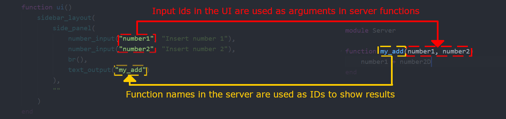

Server-side logic
Server-side logic defines how your app reacts to user input. It's really the whole point of Matte, otherwise you're just making pointless web pages. Server-side logic in Matte is 100% Julia, so it's easy to give your existing analysis a nice front-end.
Structure
Server side logic is all contained in a module that must be called Server, which is defined as a sub-module of your app module. This module can, of course, import other packages, modules and code.
The structure of Matte reactivity is this:
- Each function in the server module represents an
outputvariable that can be rendered in
your UI.
- These server-side functions can take as inputs any variable whose name corresponds to the
id of an input element in your UI

Matte will update the relevant element in the UI to whatever is returned by the function. If the function returns nothing, the UI will not be updated. This is helpful if you want to avoid re-reunning a long-running computation unless certain conditions are met. See guide on long-running computations.
In practice
In the UI we created in the last part, we have only one text_output which is rendering my_output. What we want the app to do is take the number the user choose with the slider (which has id = "my_slider"), multiply it by 10 and then show that in the UI.
To do that, all we need to do is define a function called my_output (which is the id our text_output in the UI is going to render) that takes a single input called my_slider.
Module Server
function my_output(my_slider)
my_slider * 10
end
endThis alignment between ids in the UI and function names or argument numbers is how Matte creates relationships between UI inputs and outputs. It's a simple, but flexible model.
In the next two guides we'll look at incorporating more interesting outputs into your dashboards: DataFrames and Plots.